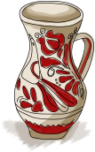

A Gagymente Tájegységi Értéktár 2025-ben alakult azzal a
céllal, hogy közös értékeink mentén építsük és erősítsük közösségeinket.
A bizottságot lelkészek, pedagógusok, önkormányzati képviselők és közösségi
emberek alkotják – olyanok, akik szívügyüknek tekintik a helyi hagyományok és
értékek megőrzését. A kezdeményezés élére Szentábrahám Polgármesteri Hivatala állt,
a projekt lebonyolítója a Szentábrahám Községi Hagyományőrző Egyesület.
Támogatói között szerepel a Hargita Megye Tanácsa és a Hagyományőrzési Forrásközpont,
partnerként pedig a Székelykeresztúri Kistérség.
Miről szól az értéktár?
Az értéktár célja, hogy összegyűjtse, rendszerezze és bemutassa a térség települési
és tájegységi értékeit. Ezek olyan helyi sajátosságok, hagyományok, alkotások, természeti
vagy emberi eredetű kincsek, amelyek meghatározzák közösségeink arculatát, és amelyekre
méltán lehetünk büszkék.
Értékek

Agrár- és élelmiszergazdaság
Egészség és életmód
Épített környezet
Ipari és műszaki megoldások
Kulturális örökség
Sport
Természeti környezet
Vendéglátás
Közös ügyünk
Értékeink megőrzése és népszerűsítése mindannyiunk feladata.
Arra bátorítunk mindenkit, hogy javaslataival, ötleteivel aktív részese
legyen ennek a munkának. Együtt adhassuk tovább kincseinket a következő nemzedékeknek!
A hungarikum törvény és a tájegységi értéktár
A 2012. évi hungarikum törvény hozta létre azt az értéktár-rendszert, amelynek részeként működik a Gagymente Tájegységi Értéktár is. A törvény célja, hogy összegyűjtse, rendszerezze és megőrizze a magyar nemzeti értékeket – a helyi közösségektől a hungarikumokig.
A tájegységi értéktár ennek a rendszernek a helyi szintjét képviseli: itt gyűjtjük össze és mutatjuk be a Gagymente településein fellelhető
kulturális, természeti, gazdasági és közösségi kincseket. Ezek az értékek – közösségi
javaslatok alapján – akár magasabb szintre is felterjeszthetők, és idővel országos vagy
nemzetközi elismerést is kaphatnak.
A bizottság tagjai
Szász-Cserey Katalin
Szentgericzei-Gál Zoltán
Berei István
Moldován-Szeredai Noémi
Baráth István
Zsigmond Zoltán-Csaba
Szőcs Béla
Gothárd-Kis Zita-Ilona
Zsigmod Ibolya
Csiki Emese
P.Buzogány Árpád
Szász József-Albert
Fazakas Levente
Jánosi Levente
Demeter István
Fekete Zoltán
Mátéfi Attila
Elnök: Fenyédi csaba
Hahó!
Érdekel az Értéktár? Lehet, hogy elsiklottál felette.👀
Kismedesért a XIX. század második felében a Medesérhez tartozó, a Gagy völgyébe átnyúló területeken gazdálkodó tanyai családok alapították, 1875-től önálló település. . .
Szentábrahámot 1333-34-ben említi a pápai tizedjegyzék Sancto Abraam néven, 1566-ban Zenth Abran néven bukkan fel. 1839-től hivatalosan is Szent-Ábrahám. . .